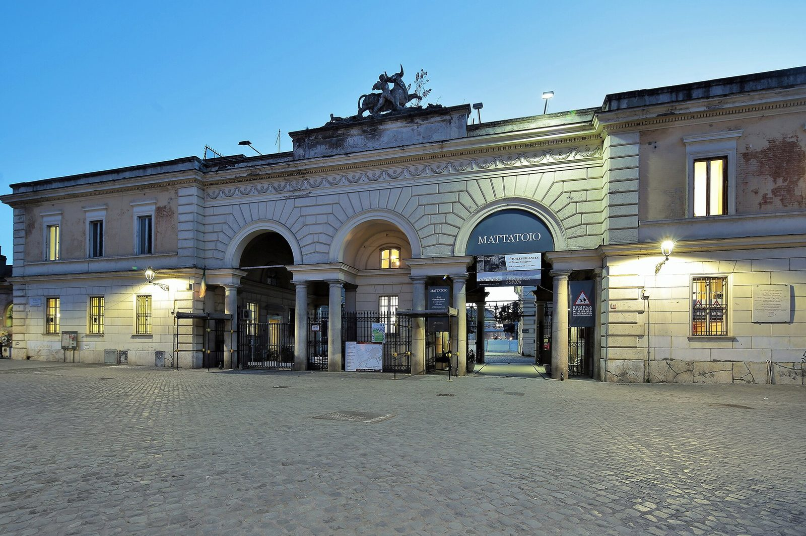
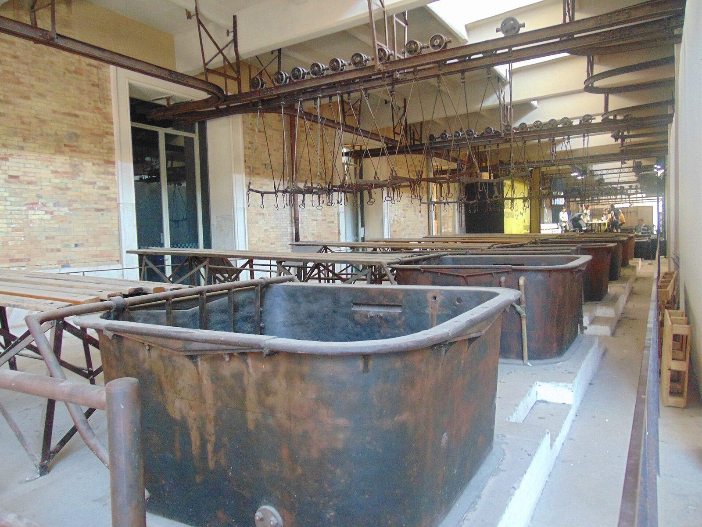
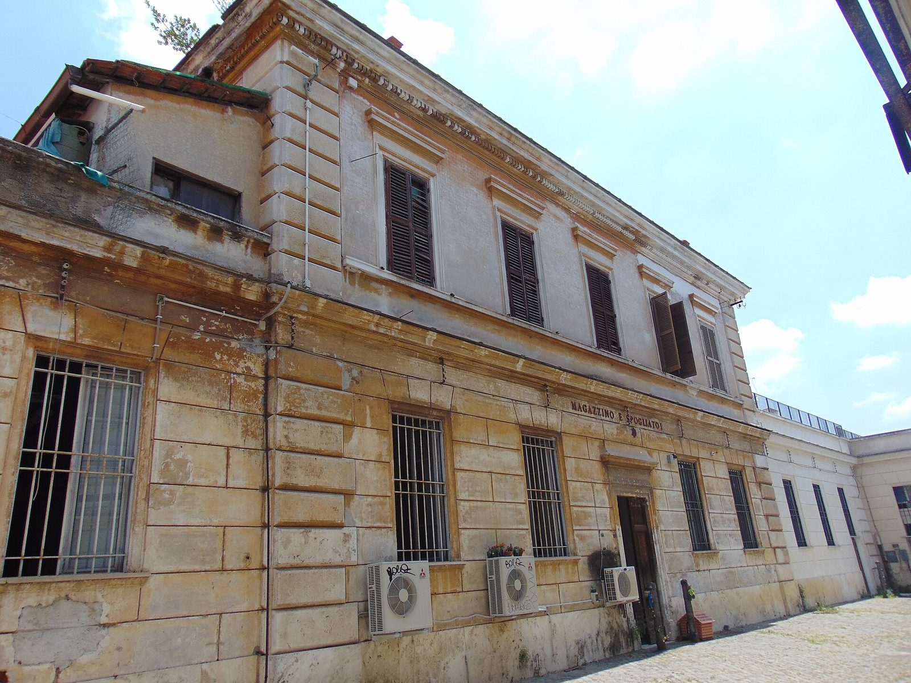

Il Dipartimento di Architettura di Roma Tre
La scuola che ospita il Laboratorio di Progettazione Architettonica 2 e il modulo Struttura e Architettura.

Chi siamo
Il Dipartimento di Architettura dell'Università degli Studi Roma Tre si occupa di formazione e ricerca sul territorio, sulle città e sulle costruzioni, nelle loro declinazioni umanistiche e tecnico-scientifiche. Si descrive come una scuola di grandezza medio-piccola.
Il Dipartimento offre anche master di primo e secondo livello e dottorati di ricerca.
Progettazione integrata
Progettare un edificio vuol dire tenere insieme forma, uso, costruzione e struttura. Nel Dipartimento le discipline umanistiche e quelle tecnico-scientifiche convivono nella stessa scuola, e questo modulo porta l'idea in aula: insegna a stimare le dimensioni di travi e pilastri mentre si disegna il progetto di architettura, prima di avere i calcoli di un ingegnere.
I tre livelli delle slide seguono questo percorso: prima gli ingombri con cui disegnare (livello 1), poi un dimensionamento semplificato (livello 2), infine le verifiche complete delle NTC 2018 (livello 3), che sono del corso di Tecnica delle Costruzioni.
Alcuni riconoscimenti
Dalla pagina «Eccellenze e riconoscimenti» del Dipartimento (aggiornata il 27 luglio 2026), che elenca premi, borse e riconoscimenti dal 2012:
- Solar Decathlon Europe: «Rome for Dencity», 1ª classificata a SDE 2014; «Med in Italy», 3ª classificata a SDE 2012.
- Premio internazionale AR&PA: primo premio nel 2020 e nel 2022.
- Piranesi Prix de Rome et d'Athènes 2022-23: menzione speciale.
- Premio Italiano Architettura Sostenibile Fassa Bortolo, XV edizione (2022): menzione d'onore.
- Concorso internazionale di design «Da 0 a 100…» (2025): primo premio.
Elenco completo sul sito del Dipartimento
La sede: l'Ex Mattatoio di Testaccio
Una parte del Dipartimento si trova nell'Ex Mattatoio di Testaccio (Largo Giovanni Battista Marzi 10, Roma): didattica della triennale e delle magistrali, uffici e biblioteca. Le altre attività sono in via Madonna dei Monti, in attesa del completamento del recupero edilizio. Il mattatoio fu progettato da Gioacchino Ersoch e costruito tra il 1888 e il 1891; dopo il restauro del Padiglione 7, nel 2000, il Dipartimento fu la prima istituzione pubblica a insediarvisi.

_01.jpg){kind=link}

_14.jpg){kind=link}